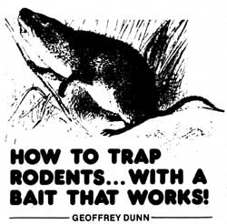

Most everyone has had a rodent problem at one time or another, and that includes Jody (my wife) and 1. Our rodent-infestation problems, however, are now a thing of the past ... thanks to a recent discovery that we've made. No, we haven't built a better mousetrap ... but we have stumbled upon a "new" and (we think) sure-fire bait.
Our cabin and outbuild ings- located at a forest/meadow edgeare regularly infiltrated by a variety of wood rats and field mice. In our attempts to control this encroachment, we've patched wall holes, used our cats as predators, and tried to trap the pests ... all with only minimal results. Last winter, however-after my wife and I had stored a large supply of walnuts in the pantry-we noticed a significant increase in the number of nibbling critters in and around our "cache". It was this very observation that led us to try walnuts as our bait in the good ole common, spring-loaded mousetrap.
At first, we used the walnuts with 1-1/2" X 4" traps ... but soon found this size to be too small to catch and hold the larger rats. We then switched to 3-1/2" X 7" traps which experience soon showed us would accommodate all infiltrators (from the tiniest mice to the biggest "brutes") ... and kill them instantly, without prolonged suffering.
To prepare the walnuts as bait, we first put on leather gloves so we don't contaminate the nuts' scent with our own. Then we crack open one of the nuggets ... split its meat into two pieces ... and-with cotton thread?firm/y tie one of the halves to the bait pedal on the trap. (To increase the enticing smell given off by our offering, we sometimes scrape the nutmeat with a knife before we tie it in place.) Of course, we set the trap as "lightly" as possible-with the setting bar barely held by the bait pedal-so that even the slightest pressure will trigger the spring.
The placement of the trap is also important. We've found that rodents tend to travel next to walls along the floor ... thus, a hidden corner-or an obvious entrance/exit hole or crack in the wall-makes the best spot to set a trap. If possible, it also helps to secure the device to the floor with a small nail in order to [1] allow for maximum impact force when the bar is sprung, and [2] prevent the gadget from being carried away by other animals.
Since we've discovered this trap/bait combination, we've experienced a 100% success rate ... and never (after having noticed signs of rodent infiltration in a given area) has it taken us more than twelve hours to exterminate the intruder!
Although the death of any creature is hardly a joyous event, the elimination of rodents-which pose threats to the health of animals and humans alike-is a necessary task. Our discovery of walnuts as mouse-and rattrap bait has helped us to control our rodent population ... and it could well do the same for you!
|
 |
|
|